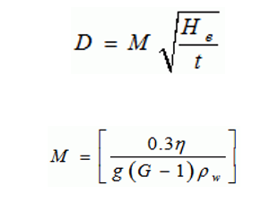

To determine percentage silt size and clay size fractions of the given soil by hydrometer analysis.
The particle size (D) is given by:

In which,
n = viscosity of water in poise,
G = specific gravity of solids,
Pw = density of water (gm/ml);
He= effective depth,
t= time in minutes at which observation is taken, reckoned with respect to the beginning of sedimentation.
The percentage finer than the size D is given by
Where,
R= corrected hydrometer reading,
Ms= mass of dry soil in 1000ml suspension.